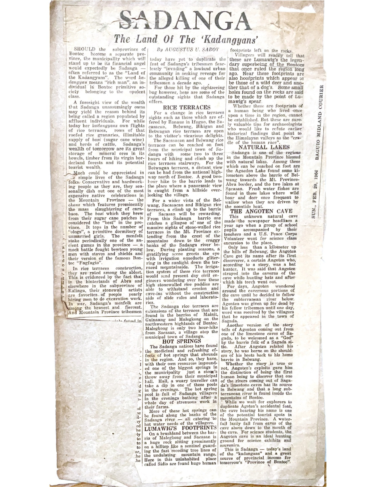

Sadanga: The Land of the ‘Kadangyans’
A historical feature by Augustus U. Saboy, published in the Baguio Midland Courier on Sunday, February 20, 1966.
About the 1966 feature
Saboy introduces Sadanga in Mountain Province through the term kadangyan, which he explains in the article as referring to a wealthy person. He describes the community’s rice terraces, granaries, cattle, sugar-cane wine and cultural practices, while also discussing its potential resources and visitors’ attractions.
Under separate headings, the article explores rice terraces around Sacasacan, Belwang, Bikigan and Betwagan; hot springs; traditions concerning Lumawig’s footprints; natural lakes; and the story of Angoten Cave. The account of Angoten is presented as local oral tradition, with more than one version acknowledged in the article.
Original newspaper clipping

Publication and source record
Headline: Sadanga: The Land of the ‘Kadangyans’.
Author: Augustus U. Saboy.
Newspaper: Baguio Midland Courier.
Date: Sunday, February 20, 1966 (visible on clipping).
Source: Augustus Saboy articles, page 4 of the family-supplied PDF.
Textual preservation. Some text at the clipping’s lower-left edge is partially obscured or damaged. Rather than silently reconstruct missing words, this edition makes the original image available for consultation. A fully checked diplomatic transcription may be added later.